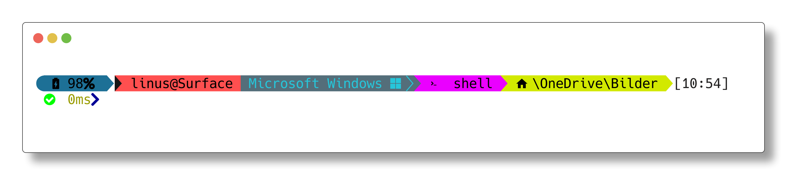

☰ menu
Scratch-Projekte von minutix
eiOS
Andere Dinge
OhMyPoSH-Thema

libewa.omp.json herunterladen
Installation
Schiebt die Datei in den "Themes"-Ordner im Installationsordner von oh-my-posh. Bei mir ist dieser zum Beispiel in C:\Users\linus\OneDrive\Dokumente\WindowsPowerShell\Modules\oh-my-posh\3.9.0